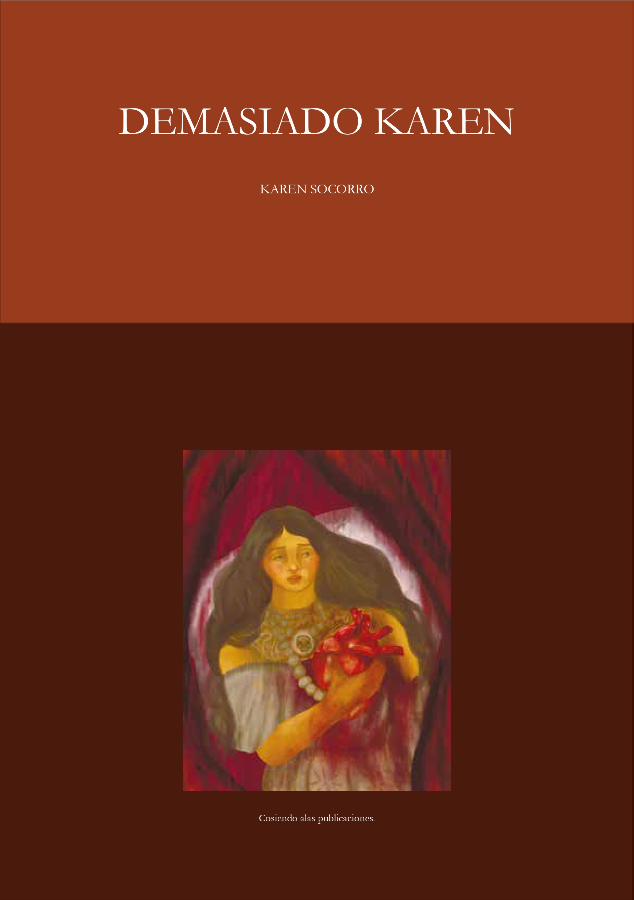

Libro
Demasiado
Karen.
Le pidieron que fuera menos Karen. Escribió un libro siendo demasiado.

- Autoría
- Karen Socorro
- Edición y maquetación
- Alexis Martínez
- Ilustración
- Alondra Solorio Castillo
- Edición
- Primera. Ciudad de México, 2026
- Licencia
- Creative Commons.
- Extensión
- Cuatro partes, 44 capítulos y un epílogo.
- ISBN
- En trámite desde el 27 de octubre de 2026, junto con el depósito legal
Sinopsis
La historia de Karen Socorro es mucho más que la serie de notas que surgieron tras aquel estallido mediático. En 2023 terminó la cobertura, terminó la movilización. Se pintaron murales, se inventaron consignas, pero el origen, como suele ocurrir cuando algo se vuelve monumento, se ignoró o, peor aún, se olvidó.
Demasiado Karen es un testimonio, en momentos rayando la autoetnografía, que convierte la voz en escritura para contar lo que quedó fuera del relato de la primera organización estudiantil que detuvo las clases por más de dos meses.
Frente a todo lo que se publicó, este libro es una resistencia al olvido institucional, social y quizá también personal. La violencia no nos es ajena. Este texto narra la que se pasa por alto, aquella en la que tal vez hemos participado y que naturalizamos.
Su intención es incomodar. Porque en la incomodidad hay algún reconocimiento: si no de quien lo escribe, quizá de quien lo lee.
Sobre la autora
Oriunda de la Ciudad de México y ex cinepolita.
Con el corazón en el cine, pero sin la capacidad económica de cultivarlo, realiza investigaciones en torno a la violencia sexual en universidades.
Acuario de carta astral funesta, jamás te negará una sonrisa o una buena broma que haga tu día más llevadero.
Dónde conseguirlo
Actualmente estamos trabajando en la versión física del libro. En cuanto esté disponible avisaremos por este medio y mediante nuestras redes sociales.
La versión gratuita de descarga la pueden encontrar en el siguiente enlace: Descargar libro digital.
Si está en tus posibilidades apoyar el proyecto, puedes hacerlo dando clic en el apartado: colabora.
Presentaciones y club de lectura
Las siguientes fechas están publicadas en nuestras redes sociales.
Del libro al video
Cada pieza parte
de un capítulo.
Ningún episodio narra la escena de violencia: esa se queda solo en el libro. Todos parten de lo que la rodea: la institución, el archivo, la lectura.
Parte I · capítulos 1–10
La niña que soñaba con ser escritora
La familia y la escuela como instituciones.
Parte II · capítulos 11–22
La princesa de diamantina
El procedimiento universitario visto desde dentro, el tendedero y el paro como memoria colectiva.
Parte III · capítulos 23–38
La loca del paro
Cómo el proceso se vuelve castigo. De dónde nace Cosiendo Alas. Quién cuida a quien denuncia.
Parte IV · capítulos 39–44
La cinepolita
Precariedad, violencia de clase y apoyo mutuo.
Epílogo
El imperio del trauma
La víctima como categoría jurídica, la funa como exigencia de responsabilidad y Rosario Castellanos.
Editorial
Lo que
publicamos.
Libros, informes y cuadernos. Lo que circula en papel y lo que se puede citar.
Publicar es parte del trabajo. Un libro, un informe o un cuaderno circulan donde una página web no llega, y se citan de un modo que una publicación en redes no permite.
Catálogo
Demasiado Karen
Libro autobiográfico, 2026. Las instituciones que atraviesan una vida, contadas por quien las vivió.
Informes del Observatorio
Los reportes de hallazgos viven en el Observatorio, con su metodología y sus datos.
Análsis culturales, ensayos y recomendaciones
Aquí podrás encontrar textos prodctos de los videos que producimos así como análisis de diversos tipos de productos culturales.